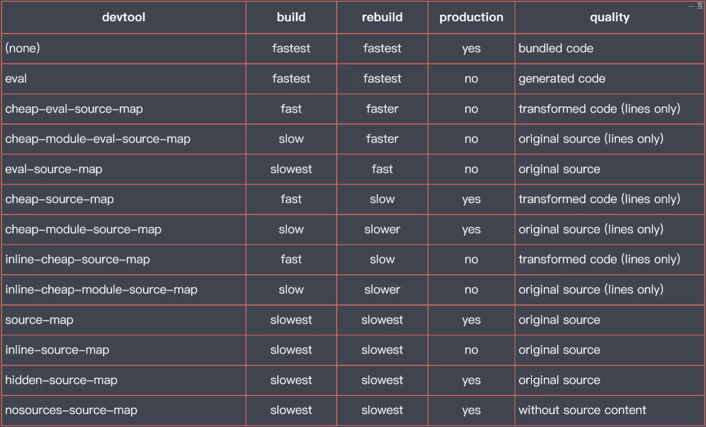

模块化存在的问题
1、ES Modules存在兼容问题。
2、模块化后模块文件过多，每一个文件都需要请求回来，这样就会造成网络请求频繁。
3、影响应用的工作效率，所有的前端资源都需要模块化。
需要一个打包工具，他需要具有以下特性。
1、可以编译具有新特性的代码。
2、可以将散落的模块文件再次打包到一起这样就可以解决模块文件频繁发出请求的问题。
3、支持不同种类前端资源类型，这样就可以前端开发过程中样式，图片，字体等等都当做模块使用。
Webpack 模块打包器
首先安装 webpack wabpack-cli
在entry属性中设置入口文件的位置
在output属性中设置输出文件的位置,output的值是一个对象。
通过这个对象中的filename属性来指定输出文件的名称，通过path属性指定输出文件的目录，必须是绝对路径，所以可以用node中的path模块来转换。path: path.join(__dirname,'output')
webpack工作模式
有三种，'production','development','none'。 默认使用production。
可以通过cli参数指定工作模式 npm run webpack --mode development
还可以通过在配置文件中添加mode属性。
选项 | 描述 |
development | 会将 process.env.NODE_ENV 的值设为 development。启用 NamedChunksPlugin 和 NamedModulesPlugin。 |
production | 会将 process.env.NODE_ENV 的值设为 production。启用 FlagDependencyUsagePlugin, FlagIncludedChunksPlugin, ModuleConcatenationPlugin, NoEmitOnErrorsPlugin, OccurrenceOrderPlugin, SideEffectsFlagPlugin 和 UglifyJsPlugin. |
webpack打包结果运行原理
webpack资源模块加载
loader是webpack实现整个前端模块化的核心，通过不同的loader，可以加载任何类型的资源
举例：加载css代码
首先要先下载css-loader，
在配置文件中添加对应的配置。
在配置对象中的module属性中添加rules数组，这个数组就是对于其他资源模块的加载规则的配置，每个规则对象都需要设置两个属性。test属性，是一个正则表达式，用来去匹配打包过程中所遇到的文件路径，use属性，用来指定匹配到的文件使用的loader。
css-loader的作用就是将css文件转换为一个js模块，将css代码push到了exports的数组当中，这个数组是由css-loader内部的一个模块所提供的，整个过程中没有用到这个数组，所以还要安装一个style-loader，它的作用就是将css转换过后的结果通过style标签追加到页面上。use属性中默认先执行数组中最后一个，所以需要把css-loader放在最后。
webpack文件资源加载器
file-loader
webpack打包时遇到了图片文件，根据配置文件中的配置，匹配到对应的文件加载器。将导入的文件拷贝到输出的目录，再将文件拷贝到输出目录过后的那个路径作为当前模块的返回值返回。这样对于应用来说所需要的的资源就被发布出来了，同时可以通过模块的导出撑到拿到这个资源的访问路径。
Data URL
data URL可以直接表示一个文件，当前URL就可以表示一个文件内容的方式。
这种URL当中的文本就已经包含了文件的内容，就可以不用发送Http请求。
webpack里可以通过url-loader实现
limit属性指定多大以内的做成dataURL
webpack常用加载器分类
1、编译转换类。会将加载到的资源模块转换为js代码。
2、文件操作类。会将加载到的资源模块拷贝输出的目录，同时将文件的访问路径向外导出。
3、代码检查类。统一代码风格，提高代码质量。不会修改生产环境的代码。
webpack处理ES2015
因为模块打包需要，所以处理import和export。不会处理其他的ES6特性。
通过babel-loader处理。安装babel-loader, @babel/core @babel/preset-env
webpack模块加载方式
import声明
require函数
define和require函数
不要混合使用
loader加载非javascript也会触发资源加载，样式中的@import指令和url函数， HTML中图片标签的src属性。
webpack核心工作原理
webpack会根据配置找到其中的一个文件作为打包入口，一般为js文件。会顺着入口文件中的代码，根据代码中出现的import，require之类的语句来解析推断出来该模块所需要的资源模块，然后分别去解析每一个资源模块所需要的依赖，最后就形成了整个文件中的依赖关系树，然后会遍历（递归）这个依赖关系树，找到每个节点所需要的的资源文件，再根据配置文件中的rules属性去找到这个模块所对应的加载器，交给对应的加载器去处理。最后将加载过后的结果放到bundle.js当中，从而实现整个项目的打包。整个过程中loader机制是webpack的核心，没有loader的话，就没有办法实现各式各样资源的加载，就是简单的打包合并js代码的工具。
loader的工作原理
loader负责资源文件从输入到输出的转换。loader是一种管道的概念，对于同一个资源可以一次使用多个loader，用多个loader实现一个功能。
注意：最后的输出一定要是一段JS代码。
webpack插件机制
webpack常用插件
clean-webpack-plugin 自动清除输出目录
const {CleanWebpackPlugin} = require('clean-webpack-plugin')
在plugins里面添加 new CleanWebpackPlugin()
html-webpack-plugin 自动生成使用bundle.js的HTML
const HtmlWebpackPlugin = requrie('htm-webpack-plugin')默认导出的就是一个插件的类型，不需要解构。在plugins里面添加newHtmlWebpackPlugin()
常用参数
new HtmlWebpackPlugin({
template:path.resolve(__dirname,'./public/index.html'),
filename:'index.html',
title: 'pxr',
favicon:'./public/favicon.ico',
'meta': {
'viewport': 'width=device-width, initial-scale=1, shrink-to-fit=no',
}
}
),
如果想要创建多个html文件
只要在plugins里面添加多个 new HtmlWbpackPlugin()实例对象即可。
copy-webpack-plugin 复制一些文件到最后构建的文件夹中。
imagemin webpack plugin 压缩输出的图片文件
webpack插件机制
webpack 插件机制就是通过钩子机制实现的。 webpack要求插件必须是一个函数或者是一个包含apply方法的对象。
通过往生命周期的钩子中挂载函数实现扩展。
class deleteNotePlugin {
apply(complier){
complier.hooks.emit.tap('deleteNotePlugin', compilation =>{
// console.log(typeof compilation.assets)
for( let name in compilation.assets){
if(name.endsWith('.js')){
const content = compilation.assets[name].source()
const newContent = content.replace(/\/\/*\*+\*\//g, '')
compilation.assets[name] = {
source: () => newContent,
size: () => newContent.length
}
}
}
})
}
}
webpack watch
Webpack Dev Server
devServer:{
open:true,
port:8989,
contentBase: './public',
hot:true
},
contentBase是webpack-dev-server指定额外的静态资源目录
Webpack Dev Server代理API服务
由于开发服务器的缘故，应用将会运行在localhost上的一个端口上，而最终上线过后应用和api将会部署在同源地址上，这样的话在实际生产环境当中可以直接访问api，但是在开发环境当中就会产生跨域请求问题，我们可以使用跨域资源共享（CORS）的方式去解决这个问题，但是前提是请求的API必须支持CORS，但是并不是每种服务端的API都一定要支持CORS的，如果前后端同源部署的话（域名，协议，端口）都一致的话，那就没必要开启CORS，所以就会出现开发阶段接口跨域问题。
为了解决这个问题可以在开发服务器上配置代理服务，也就是把接口服务代理到本地的开发服务地址。
Webpack Dev Server支持配置代理服务
在devServer下添加proxy属性，该属性值为一个对象。每一个属性就是代理规则的配置，属性的名称就是需要被代理的请求路径前缀，也就是请求以哪一个地址开始，他就会走代理请求。属性的值是为这个前缀所匹配到的代理规则匹配。代理目标为target属性。
Source Map
Source Map解决了源代码与运行代码不一样所产生的问题。
webpack 配置 source map
webpack提供了12中模式
eval模式
只能是知道错误的源文件是哪一个，不能提供具体报错的行列信息。
eval-source-map模式
不仅能告诉是哪一个文件，还能提供行列信息。
cheap-eval-source-map模式
能告诉文件，行，不能告诉列。转换代码为ES5代码后的文件
cheap-module-eval-source-map。 在源文件上提示，没有经过转化的文件。
nosources-source-map 能够告诉具体的错误文件和行信息，但是不会暴露源代码。
eval---是否使用eval执行模块代码
cheap---source Map是否包含行信息
module---是否能够得到Loader处理之前的源代码
source-map的选择
推荐：
开发模式： cheap-module-eval-source-map
生产模式： none或者nosources-source-map

webpack HMR
应用运行时实时的替换某个模块，应用运行状态不受影响，热替换只将修改的模块实时替换至应用中，不必刷新页面。
开启HMR
HMR已经继承在了webpack-dev-server中，所以不用再去安装别的模块。
在运行webpack-devserver的时候后面加上 --hot参数，开启这个特性，或者在配置文件中配置来开启。
将devServer中的hot属性设置为true。
JS代码需要收到处理模块热替换的逻辑
CSS文件已经通过loader除了了热更新的逻辑
JS模块中可能导出的是一个对象，函数，字符串等等，对导出的成员的使用也是各不相同的，没什么规律，所以webpack面对这些毫无规律的JS模块就没办法处理跟新过后的模块，那就没办法提供一个通用的模块替换方案。这就是为什么央视文件可以热更新，JS模块还要自动刷新的原因。VUE和React已经继承了HMR方案，不用手动处理。
HMR APIs
hotmodulereplacementplugins为我们的js代码提供了一套处理HMR的API。
用module.hot.accept(),第一个参数是依赖模块的路径，第二个参数是更新过后的处理函数。
module.hot.accept('./editor', () => {
console.log('处理的逻辑')
})
webpack 不同环境配置
配置文件也可以导出为一个函数，在这个函数中返回我们所需要的配置对象，这个函数可以接收两个参数一个是env（环境参数），第二个是argv（运行时传递的所有参数），这样就可以为开发环境和生产环境返回不同的配置。
不同环境使用不同的配置文件
可以使用webpack-merge来合并通用配置文件和不同环境的配置文件
DefinePlugin
为内置的插件，需要先导入webpack模块
为代码注入全局成员
在production模式下默认该插件就会启用，并且往代码里加入了process.env.NODE_ENV的常量。
new webpack.DefinePlugin({
API_BASE_URL: 'http://api.baidu.com'
})
Tree-shaking
有个optimization属性，该属性为一个对象，值里有一个属性usedExports:true 只导出引用了的成员 负责标记哪些是枯树枝
minimize:true 未引用的代码会被删除 负责将枯树枝摇下来
合并模块函数（Scope Hoisting）
普通的打包是将我们的模块单独放到一个函数中，如果模块很多的话，输出结果中会有很多这种模块函数。
concatenateModules: true 的作用就是尽可能将所有模块合并输出到一个函数中，这样集体省了运行效率，又减少了代码的体积
webpack sideEffects
sideEffects： 模块执行的时候除了导出成员外所做的事情。
sideEffects一般用于npm包标记是否有副作用。
分两步
第一步在配置文件中的optimization里面加上sideEffects: true
第二步在package.json里面加上sideEffects: false，这里也可以是一个数组，把有副作用模块的路径写进去。
webpack 代码分包/代码分割
所有的代码都会被打包到一起，bundle体积会很大。但是应用开始的时候并不是所有的模块都需要加载进来的。这样会浪费很多的流量和带宽。
把打包结果按照一定得规则去分离到多个bundle当中，然后根据运行需要，按需加载模块。这样的话就大大的提高应用的相应速度以及运行效率。
http1.1版本有很多缺陷
不能同时对同一个域名下发起并行请求。每次请求都会有一定得延迟。请求头和响应头浪费带宽流量。
把模块按照所涉及的规则打包到不同的bundle当中，提高响应速度。
目前webpack分包方式有两种。1、多入口打包。2、动态导入模块。
多入口打包
一般应用于传统的多页应用程序。最常见的划分规则是一个页面对应一个打包入口。
不同页面公共的部分，提取到公共的bundle当中。
entry定义成一个对象，不是数组，是数组的话就是把多个文件打包到一起，对于整个应用来讲还是一个入口。
entry对象里每一个属性就是一个入口， 键是入口的名称，值是入口对应的文件路径
output输出名也需要更改
output: {
filename: '[name].bundle.js'
}
在htmlwebpackplugin插件里面设置对应要加载的js文件。用chunks属性
new HtmlWebpackPlugin({
title: 'qweqwe',
template: './src/index.html',
filename: 'index.html',
chunks: ['index']
})
提取公共模块
在优化配置当中开启splitChunks的功能。
optimization: {
splitChunks: {
chunks: 'all'
}
}
动态导入模块
动态导入的模块会被自动分包
使用的就是esMoule标准的动态导入。
在需要动态导入的地方，通过import方法导入指定的路径，该方法返回一个promise对象，可以通过then方法拿到模块对象，需要结构模块当中的default
import('./posts/posts').then(({default: posts})=> {
。。。。。逻辑
})
魔法注释
默认通过动态导入产生的文件，他的默认名称就是一个序号，如果想给他起名，需要用到魔法注释来实现。
调用import函数的参数位置，添加一个行内注释/* webpackChunkName: 'posts' */
如果chunkName相同的话，会被打包到一起。
MiniCssExtractPlugin
可以将CSS提取到单个文件，通过这个插件可以实现CSS文件的按需加载
optimizeCssAssetsWebpackPlugin
可以将提取出来的Css文件压缩。
webpack默认的JS压缩插件叫TerserWebpackPlugin
输出文件名Hash
一般部署前端的资源文件时都会启用服务器的静态资源缓存，这样对用户的浏览器而言，就会缓存我们应用的静态资源，从而就不用再发送请求得到这些静态资源文件了，这样整体的相应速度就会有大幅度的提升，但是开启客户端静态资源缓存会有一些问题，如果缓存策略当中如果缓存失效时间设置的过短的话，那效果就不是特别明显，如果过期时间设置的比较长，那这个过程中我们的应用发生了更新，重新部署过后，就没有办法及时更新到客户端，为了解决这样一个问题，我们需要再生产模式下，给输出的文件名当中添加Hash值，这样的话一旦我们的资源文件发生改变，那文件名称也会跟着一起变化，对于客户端而言，全新的文件名就是全新的请求，那也就没有缓存的问题，这样就可以把服务端缓存策略当中的过期时间设置的非常长，就可以不用担心文件更新过后的问题。
webpack当中的filename属性和绝大多数插件当中的filename属性都支持通过占位符的方式来为文件名设置hash，不过支持三种hash，效果各不相同。
1、普通的[hash]
filename: '[name]-[hash].bundle.js
这个hash是项目级别的hash，如果项目当中有任何一个地方发生改变，那这一次打包过程当中的hash值都会发生变化。
2、[chunkhash]
这个hash是chunk级别的，也就是在打包过程中只要是同一路的打包，chunkhash都是相同的。
3、[contenthash]
这个hash是文件级别的hash，根据输出文件的内容生成的hash值，不同的文件就会有不同的hash值
webpack允许指定hash的长度，在占位符中：一个数字的方式指定hash长度
filename: '[name]-[contenthash:8].bundle.js